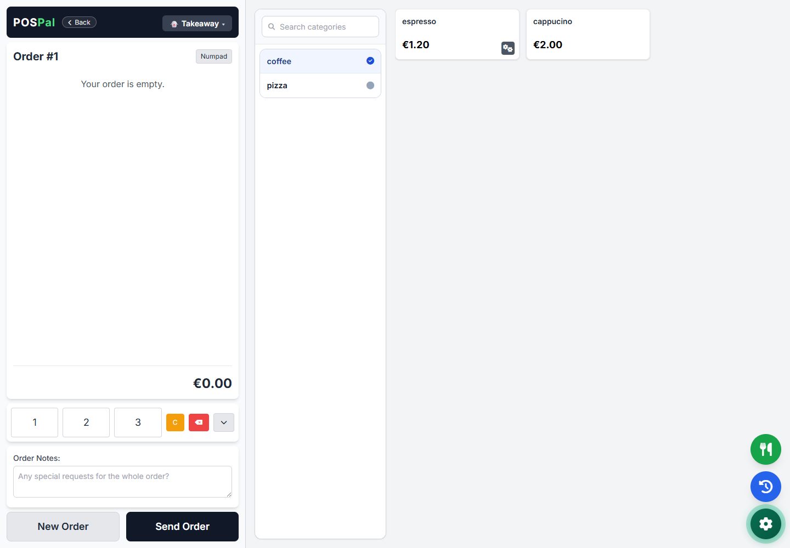
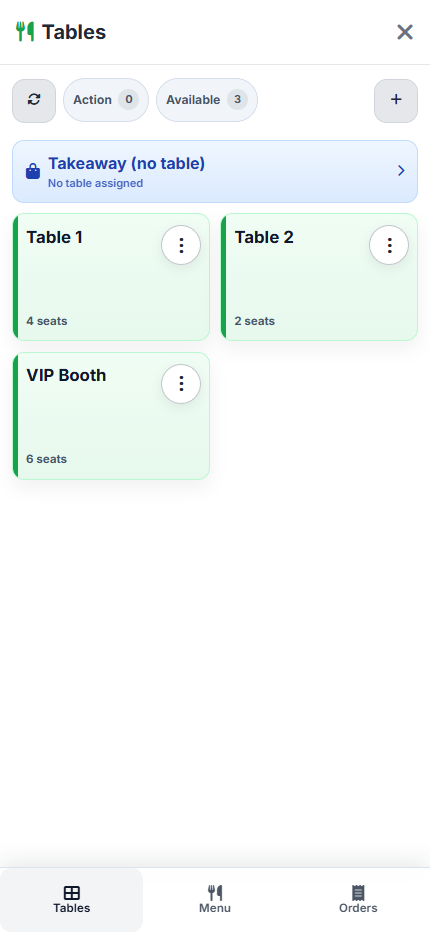
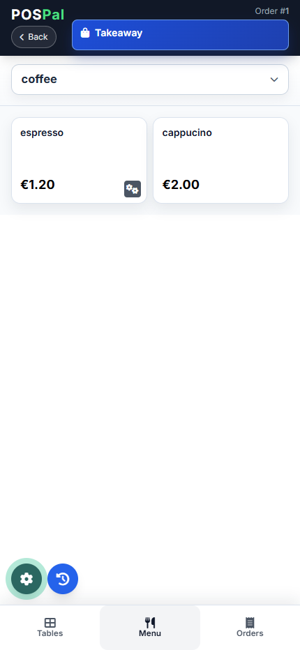
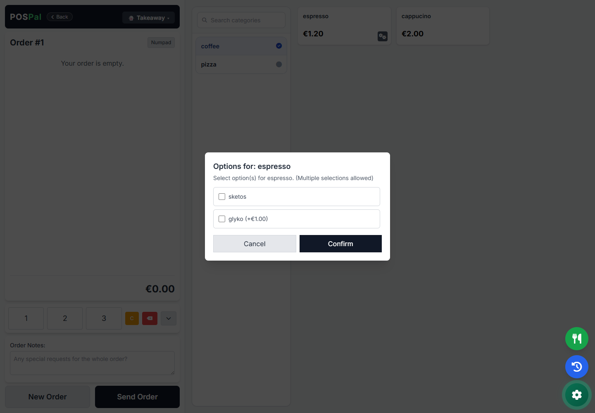
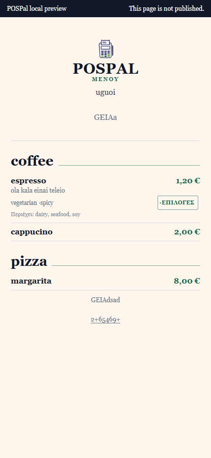

Τραπέζι
Η παραγγελία γράφεται στο κινητό ή tablet.
Κατεύθυνση 1 · Product-first
Το POSPal εγκαθίσταται σε Windows και οργανώνει τραπέζια, απλή λειτουργία, ροή κουζίνας και QR μενού από ένα σημείο. Ξεκινάς με οδηγούς, χωρίς κάρτα και χωρίς προσωπικά στοιχεία.



Κατεύθυνση 2 · Commercial punch
Κατέβασέ το, στήσε το με οδηγούς και κράτα τον έλεγχο της παραγγελιοληψίας σου. Όλα τα βασικά περιλαμβάνονται: τραπέζια, απλή λειτουργία, κουζίνα και QR μενού.
€18,90/μήνα για πρώτους χρήστες
Η τιμή μένει όσο η συνδρομή παραμένει ενεργή.
Η ακύρωση σταματά την επόμενη ανανέωση.


Πραγματικές οθόνες από το τοπικό POSPal. Τα στοιχεία μενού είναι δοκιμαστικά.
Κατεύθυνση 3 · Workflow proof
Ο σερβιτόρος μπορεί να γράψει παραγγελία εκτός εμβέλειας. Η συσκευή την κρατά τοπικά και τη συγχρονίζει όταν επιστρέψει στο ίδιο δίκτυο.
Η παραγγελία γράφεται στο κινητό ή tablet.
Δεν χάνεται όταν κοπεί προσωρινά το Wi-Fi της συσκευής.
Η παραγγελία περνά στην κύρια εφαρμογή όταν επιστρέψει τοπικά.
Το QR μενού περιλαμβάνεται και προσαρμόζεται χωρίς έξτρα module.
30 ημέρες δωρεάν · χωρίς κάρτα · χωρίς προσωπικά στοιχεία